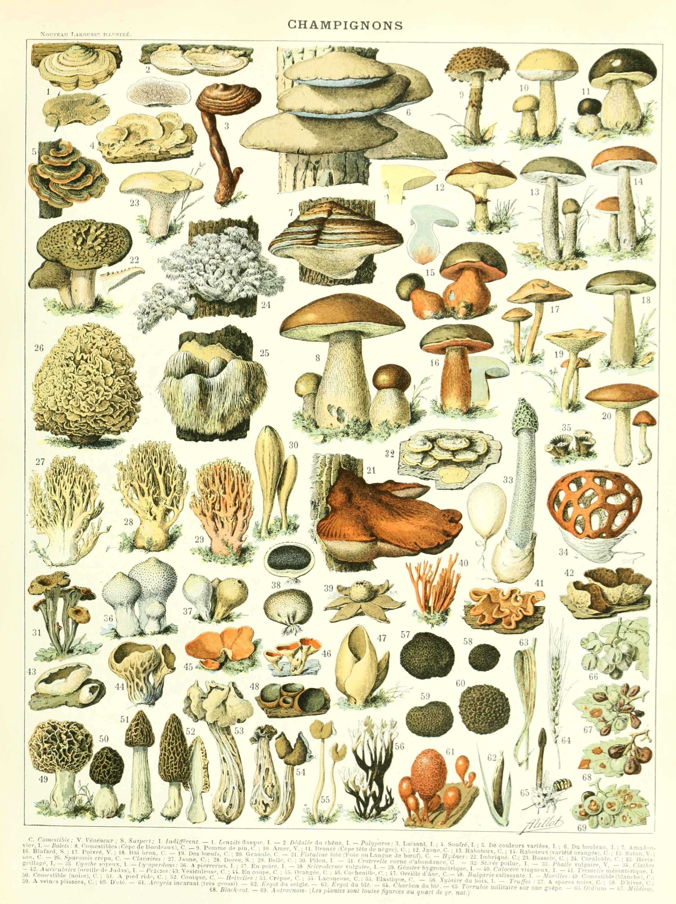

Mushroom Pasties
'Mushrooms of one night are the best, if they are small, red inside, and
closed at the top: and they should be peeled and then washed in hot
water and parboiled, and if you wish to put them in a pasty add oil,
cheese and spice powder.'
The Goodman of Paris, trans. E. Power.

This recipe is from the Medieval household book Le Ménagier de Paris
(the Goodman of Paris). At home it is likely that the fictional narrator
of the book, who kept a well-furnished table, would serve a large
double-crust pasty or plate pie – but on his journeys to and from the
farm, small ones probably seemed more suitable.
Ingredients:
- Home-made or bought shortcrust pastry, thawed if frozen (450g)
- Button mushrooms (450g)
- Olive oil (2 tbsp)
- Grated cheddar or vegan cheese, optional (50g)
- Freshly ground black pepper (1/8 tsp)
- Dry mustard powder (1/4 tsp)
- 1 egg, beaten. Alternatively use soy, rice or almond milk
- Salt (to taste)
Instructions:
-
Use two-thirds of the pastry to line small, deep pans. Chill while
making the filling. Preheat the oven to 200°C.
-
Trim off and discard the bottoms of the mushroom stems, then dip the
mushrooms in boiling salted water, holding them in a sieve. Drain
them, pat dry, then chop or slice them. Put them in a bowl and mix
them with the oil, cheese (if including) and seasonings.
-
Fill the mixture into the pastry cases. Roll out the remaining pastry
and use it to make lids for the pasties. Seal the lids with beaten egg
(or milk).
-
Decorate the tops with pastry trimmings and brush with the remaining
egg (or milk). Make a small crosscut in the centre of each lid.
- Bake the little pies in the oven for 15–18 minutes. Serve warm.
Serves six